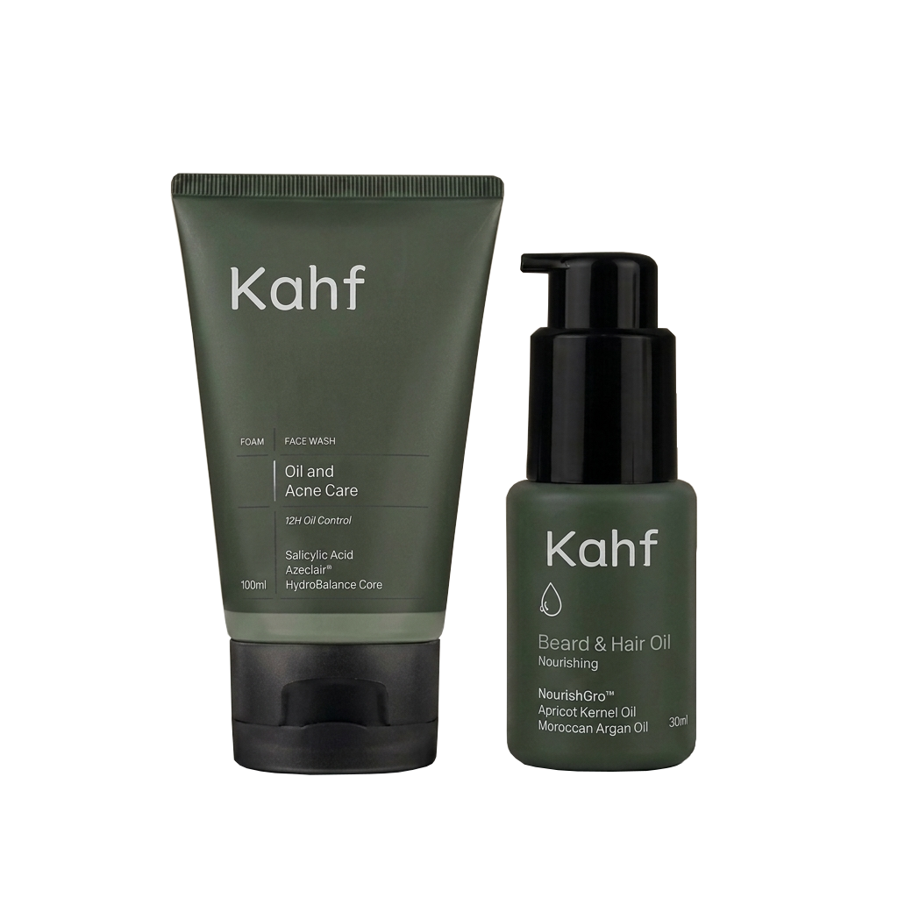

<a-scene mindar-image="imageTargetSrc: ./targets.mind;" color-space="sRGB" renderer="colorManagement: true, physicallyCorrectLights" vr-mode-ui="enabled: false" device-orientation-permission-ui="enabled: false">
  
  <a-assets>
    
  </a-assets>

  <a-camera position="0 0 0" look-controls="enabled: false"></a-camera>

  <a-entity mindar-image-target="targetIndex: 0">
    <a-image src="#produk1-img" 
             position="-0.3 0 0.1" 
             width="0.5" height="0.5"
             animation="property: position; to: -0.3 0 0.2; dur: 1000; dir: alternate; loop: true">
    </a-image>
  </a-entity>
  
</a-scene>
